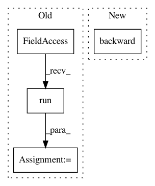

9b9a42de05056b418f98e3635f2cffd747123548,art/classifiers/pytorch.py,PyTorchClassifier,class_gradient,#PyTorchClassifier#Any#Any#,114
Before Change
if logits:
grds = self._sess.run(self._logit_class_grads, feed_dict={self._input_ph: inputs})
else:
grds = self._sess.run(self._class_grads, feed_dict={self._input_ph: inputs})
grds = np.swapaxes(np.array(grds), 0, 1)
return grds
After Change
self._model.zero_grad()
for i in range(self.nb_classes):
x.grad.data.zero_()
torch.autograd.backward(preds[:, i], torch.FloatTensor([1] * len(preds[:, 0])), retain_graph=True)
grds.append(x.grad.numpy().copy())
grds = np.swapaxes(np.array(grds), 0, 1)
In pattern: SUPERPATTERN
Frequency: 3
Non-data size: 4
Instances
Project Name: IBM/adversarial-robustness-toolbox
Commit Name: 9b9a42de05056b418f98e3635f2cffd747123548
Time: 2018-05-16
Author: M.N.Tran@ibm.com
File Name: art/classifiers/pytorch.py
Class Name: PyTorchClassifier
Method Name: class_gradient
Project Name: IBM/adversarial-robustness-toolbox
Commit Name: 9b9a42de05056b418f98e3635f2cffd747123548
Time: 2018-05-16
Author: M.N.Tran@ibm.com
File Name: art/classifiers/pytorch.py
Class Name: PyTorchClassifier
Method Name: loss_gradient
Project Name: dpressel/mead-baseline
Commit Name: 3d9e51d5034e89bcec3a04eff3e646c70b45edb2
Time: 2017-03-16
Author: dpressel@gmail.com
File Name: classify/python/tf/train.py
Class Name: Trainer
Method Name: train